The New Economy Generation: Sustain, Scale, Succeed
Youth Voice Challenge hadir sebagai ajang bagi pemuda yang ingin
menyuarakan ide-ide perubahan melalui kreativitas digital! Dalam
kompetisi ini, peserta diajak untuk menuangkan kreativitas mereka
lewat video inspiratif dan edukatif tentang aspirasi dan gagasan
untuk Indonesia yang lebih baik. Kompetisi ini adalah panggilan aksi
bagi generasi muda untuk bersuara dalam isu-isu strategis bangsa
melalui lima subtema pilihan yang mencerminkan tantangan dan peluang
pembangunan Indonesia kedepan.
Generasi muda Indonesia dengan 64,16 juta pemuda (23,18% total
penduduk) pada data BPS 2023 merupakan aset terbesar bangsa untuk
membangun masa depan, dimana mereka sebagai digital natives dengan
51,9% Gen Z aktif di Instagram dan 185,3 juta pengguna internet yang
menggunakan social media untuk leisure (58,9%) dan komunikasi
(57,1%) memiliki kapasitas untuk menciptakan perubahan yang
transformatif. Sebagai future decision makers, mereka akan menjadi
arsitek utama dalam membentuk Indonesia masa depan. Youth Voice
Challenge memberikan kesempatan bagi pemuda tampil menyampaikan
gagasan dan aspirasi pembangunan bangsa melalui konten digital di
TikTok dan Instagram, menjadikan kompetisi ini momentum strategis
untuk mendengar aspirasi anak muda terkait pembangunan yang inklusif
untuk Indonesia.
Rundown
Waktu
Durasi
Agenda
Keterangan
5.00-15.25
25’
Pre-event Activity
Gimmick Activity (Registrasi dan selamat datang kepada
peserta)
15.25-15.55
30’
Entertainment Segment
Music Performance
15.55-16.00
5’
Opening Ceremony
MC Introduction (Pembukaan resmi acara)
16.00-16.07
7’
Video Screening
Penayangan Kompilasi Video Terbaik
16.07-16.52
45’
Talkshow
1. Review singkat video-video peserta dari Juri 2.
Talkshow Mas Dandhy dan Pak Jono
16.52-17.07
15’
Diskusi
Sesi Tanya Jawab dengan Peserta
17.07-17.22
15’
Grand Finale - Award Ceremony
1. Pengumuman Pemenang 2. Kesan pesan peserta
17.22- 17.30
9’
Penutupan Acara
-
Timeline Lomba
Agenda
Waktu
Launch & Publikasi Lomba
Selasa, 5 Agustus 2025
Pendaftaran & Submit Vlog
6 Agustus – 6 Oktober 2025
Seleksi Administratif
7 – 10 Oktober 2025
Penjurian Tahap 1 & 2
13 – 17 Oktober 2025
Pengumuman Semi Finalis
Jumat, 20 Oktober 2025
Pengumuman Finalis
Selasa, 27 Oktober 2025
Penghargaan & Pemutaran di YES Summit
Sabtu, 15 November 2025
Syarat dan Ketentuan Peserta
Warga Negara Indonesia
Usia 15 – 30 tahun (dibuktikan dengan KTP/Kartu Pelajar)
Setiap peserta hanya boleh mengirimkan satu (1) video untuk satu
tema
Bukan karyawan CORE Indonesia dan keluarga
Lomba tidak dipungut biaya
Peserta dibolehkan individu atau kelompok
Untuk peserta kelompok maksimal beranggotakan 3 orang
Memiliki akun aktif Instagram
Bersedia menghadiri acara YES 2025 jika terpilih sebagai finalis
Tema kampanye
Aksi Muda untuk Ekonomi Lokal - Inisiatif pemberdayaan ekonomi
masyarakat dan UMKM
Gaya Hidup Berkelanjutan ala Anak Muda - Lifestyle sustainability
yang praktis dan accessible
Bisnis dengan Misi Sosial - Social entrepreneurship dan impact
business
Pemuda Melestarikan Alam dan Budaya - Konservasi lingkungan dan
pelestarian budaya lokal
Suara Muda untuk Ekonomi yang Adil dan Inklusif - Ide-ide economic
empowerment dan social justice
Ketentuan Umum
Menggunakan Bahasa Indonesia sebagai bahasa utama. Video yang
menggunakan bahasa daerah, bahasa asing, atau bahasa isyarat wajib
menyertakan subtitle/terjemahan dalam Bahasa Indonesia yang jelas
dan terbaca.
Tidak mengandung unsur SARA, pornografi, radikalisme, kekerasan,
dan/atau nilai-nilai yang melanggar aturan/hukum/norma yang
berlaku di Indonesia
Karya bersifat orisinal, bukan plagiasi, tidak melanggar hak
kekayaan intelektual pihak manapun, dan belum pernah dipublikasi
atau dilombakan sebelumnya
Tidak menggunakan musik atau konten berlisensi tanpa izin
Karya pemenang dapat digunakan CORE Indonesia untuk kepentingan
promosi dan edukasi dengan tetap mencantumkan kredit kepada
pembuat
Keputusan dewan juri bersifat mutlak dan tidak dapat diganggu
gugat
Ketentuan Lainnya
Hak Cipta: Peserta menjamin bahwa karya yang di submit adalah
karya orisinil dan tidak melanggar hak cipta pihak manapun
Penggunaan Karya: CORE Indonesia berhak menggunakan karya pemenang
untuk kepentingan promosi, edukasi, dan kampanye dengan tetap
mencantumkan kredit pembuat
Karya bersifat orisinal, bukan plagiasi, tidak melanggar hak
kekayaan intelektual pihak manapun, dan belum pernah dipublikasi
atau dilombakan sebelumnya
Diskualifikasi: Panitia berhak mendiskualifikasi peserta yang
melanggar ketentuan atau terbukti melakukan kecurangan
“Youth Economic Summit merupakan program tahunan CORE Indonesia
berkolaborasi dengan Suara.com guna melibatkan kaum muda untuk
berpartisipasi secara aktif mendukung kemajuan melalui perekonomian
nasional agar tumbuh tinggi dan inklusif”
Content
YOUTH ECONOMIC OUTLOOK
Sesi pembuka berformat panel diskusi berbasis data dan tren,
membantu peserta memahami arah ekonomi 2026-2027 dan
perubahan dunia kerja.
Selengkapnya
Youth Economic Outlook
Indonesia at a Crossroads: Empowering Youth to Accelerate
Economic Transformation
Diskusi interaktif yang ditujukan untuk anak muda, mengenai
prediksi kondisi perekonomian Indonesia di tahun mendatang dari
perspektif makroekonomi dan sektoral*, dengan mempertimbangkan
isu-isu penting seperti:
- Green Economy
- Digital Economy
- Hilirasi
Tujuan
Mengedukasi dan melibatkan anak muda dalam memahami dan
membentuk arah perekonomian Indonesia ke depan yang inklusif dan
berkelanjutan.
Outcome
Terciptanya generasi muda yang sadar, kritis, serta berperan
aktif dalam membentuk arah pembangunan ekonomi Indonesia yang
berkelanjutan.
Output
Press release hasil diskusi bersama anak muda dan rekomendasi
kebijakan untuk memperkuat perekonomian Indonesia yang
berkelanjutan.
Kenapa Anak Muda?
Sebagai calon pengambil kebijakan, anak muda perlu memahami
dinamika ekonomi sejak dini agar tumbuh kritis, peduli, dan siap
terlibat dalam pembangunan, bukan justru menjadi korban dari
praktik ekonomi yang tidak berkelanjutan.
MC :
Praktisi komunikasi yang telah berpengalaman memandu berbagai
acara formal maupun informal
Moderator :
Influencer muda yang fokus dengan isu-isu ekonomi yang
keberlanjutan.
Panelis :
Muhammad Ishak & Yusuf Rendy Manilet (CORE Indonesia), Andhyta
Firselly Utami (TBC, Pendiri dan CEO Think Policy)
Kegiatan ini akan dihadiri lebih 400 anak muda yang berasal dari
berbagai latar belakang.
Rundown
Waktu
Durasi
Acara
08.50-09.30
40’
Registrasi & Memasuki ruangan
09.30-09.35
5’
Pembukaan Acara oleh MC
09.35-09.40
5’
Menyanyikan lagu Indonesia Raya
09.40-09.50
10’
Welcoming Speech oleh Bapak Mohammad Faisal Direktur
Eksekutif, CORE Indonesia
09.50-10.05
15’
Keynote Speech oleh Bapak Pandu Patria Sjahrir* Chief
Investment Officer (CIO), Danantara
10.05-10.10
5’
Launching Buku Ruang Gagasan
10.10-10.15
5’
Penyerahan Cinderamata dan Foto Bersama Keynote
Speaker
10.15-10.20
5’
Penyerahan Acara dari MC dan Pembukaan oleh Moderator
10.20-11.20
60’
Panel Session “Indonesia at a Crossroads: Empowering
Youth to Accelerate Economic Transformation” 1.
Yusuf R Manilet Strategic Research Manager, CORE
Indonesia 2. Azhar Syahida Strategic Researcher
Assistant, CORE Indonesia 3. Dipo Satria Ramli
Ekonom Muda, Universitas Indonesia 4. Jeany
Hartriani Co-Initiator and Deputy Head of Katadata Green
Talkshow konversasional sebagai sesi penutup yang menyiapkan
peserta memanfaatkan peluang kerja dan membangun jalur
karier, sekaligus mempertemukan kembali seluruh peserta
dalam satu ruangan sebagai penutup bersama.
Selengkapnya
Youth Economic Talk
Empowering Youth: Smart Finance, Strategic Investment,
Sustainable Business
Youth Economic Talk 2025 hadir sebagai program edukasi
interaktif berbentuk talk show, dirancang khusus untuk generasi
muda Indonesia. Program ini menghadirkan narasumber yang
membahas tiga fokus utama: literasi keuangan untuk membangun
pondasi pengelolaan uang yang sehat, investasi portofolio
mencakup manajemen investasi dan reksadana berbasis prinsip
keberlanjutan, serta kisah sukses pelaku usaha di bidang waste
management yang membuktikan bahwa bisnis dapat sekaligus
menguntungkan dan memberikan dampak positif bagi lingkungan.
Tujuan
Literasi Keuangan yang Kuat: Peserta akan dibekali kemampuan
mengelola keuangan pribadi secara efektif, memahami strategi
pengelolaan risiko, dan membangun fondasi finansial yang solid
sebagai modal untuk melangkah ke dunia investasi maupun
bisnis.
Strategi Investasi Portofolio: Peserta akan mempelajari cara
memilih instrumen investasi yang sesuai profil risiko,
mengenali peluang menguntungkan di sektor berkelanjutan, dan
menyusun portofolio yang mampu memberikan imbal hasil optimal
dalam jangka panjang.
Strategi Investasi Portofolio: Peserta akan mempelajari cara
memilih instrumen investasi yang sesuai profil risiko,
mengenali peluang menguntungkan di sektor berkelanjutan, dan
menyusun portofolio yangInspirasi & Panduan Bisnis Nyata:
Melalui pengalaman langsung pelaku usaha di sektor pengelolaan
limbah, peserta akan mendapatkan wawasan praktis tentang
memulai, mengembangkan, dan mempertahankan bisnis yang tidak
hanya menguntungkan tetapi juga memberikan dampak positif bagi
lingkungan.
Outcome
“Peserta memperoleh materi edukasi, akses ke jejaring strategis,
dan panduan praktis investasi serta bisnis berkelanjutan".
Output
“Peserta terdorong untuk memulai investasi cerdas, mengembangkan
usaha ramah lingkungan, dan berkontribusi pada pertumbuhan
ekonomi hijau.”
Peserta: 400 orang
Hari: Sabtu, 15 November 2025
Waktu: 13.30 – 15.00 WIB
Panelis
Nama
Jabatan/Posisi
Topik
Lolita Setyawati
Certified Financial Planner & Co-founder Daya Uang
Literasi Keuangan
Ni Putu Kurniasari
Chief Operating Officer at Bareksa
Investasi Portofolio
Arky Gilang
CEO Greenprosa
Pelaku Usaha
Rundown
Waktu
Durasi
Agenda
Keterangan
12.00-12.30
30’
Ishomah
Check-in peserta Networking awal & foto booth
12.00-12.30
50’
Registrasi & Welcome
Welcome remarks MC
13.30 - 13.35
5’
Opening & MC Introduction
Pengenalan konsep YET 2025 & Brief introduction
moderator
13.35 - 13.40
5’
Moderator menjelaskan konsep YET 2025
Pengenalan konsep YET 2025 & Brief introduction 3
narasumber
13.40 - 13.50
10’
Segmen 1: Literasi Keuangan
Moderator 𝑳𝒐𝒍𝒊𝒕𝒂 𝑺𝒆𝒕𝒚𝒂𝒘𝒂𝒕𝒊 (Certified Financial
Planner & Co-founder Daya Uang)*tbc
13.50 - 14.00
10’
Segmen 2: Investasi Portofolio
Ni Putu Kurniasari (Chief of Operating Officer at
Bareksa)
workshop interaktif yang terbagi dalam beberapa kelompok,
membekali peserta dengan keterampilan praktis di bidang
creator economy, ekonomi kreatif, dan literasi finansial.
Selengkapnya
Youth Economic Summit 2025
Youth Economics Summit (YES) adalah acara puncak tahunan dari
rangkaian program youth engagement yang telah diselenggarakan
sepanjang tahun untuk menampung aspirasi generasi muda tentang
isu-isu ekonomi Indonesia. Acara ini digagas sebagai bentuk
apresiasi untuk suara-suara anak muda yang telah berkontribusi
menyampaikan gagasan dan ide-ide inovatif melalui berbagai
platform diskusi yang diselenggarakan CORE Indonesia, termasuk
apresiasi kepada peserta Youth Voice Challenge yang telah
berpartisipasi dalam kampanye tantangan iklim dan ekonomi
berkelanjutan.
Acara YES terdiri dari tiga sesi utama: Youth Economics Outlook
yang mengulas kondisi ekonomi setahun terakhir dan proyeksi
tahun depan, talkshow yang membahas hasil-hasil Ruang Gagasan
bulanan dengan menghadirkan narasumber ahli dan praktisi
ekonomi, serta pengumuman pemenang lomba konten kreator Youth
Voice Challenge 2025 yang diakhiri dengan sesi hiburan musik
dari artis dan performer muda. Program ini dirancang sebagai
forum apresiasi yang menghubungkan gagasan generasi muda dengan
berani mengambil langkah dan bersuara, sekaligus memberikan
ruang hiburan dan networking dalam suasana yang menyenangkan
bagi generasi muda.
YES sebagai bentuk kolaborasi CORE Indonesia dengan Suara.com,
ingin mewujudkan misi komunikasi masa dan platfrom digital yang
edukatif dan sinergis kepada kaum muda.
Lokasi Acara
Radio Republik Indonesia (RRI)
Jl. Medan Merdeka Barat No.4-5 2, RT.2/RW.3, Gambir, Kecamatan
Gambir, Kota Jakarta Pusat, Daerah Khusus Ibukota Jakarta
10110
Waktu
Sabtu, 15 November 2025 08.50 – 17.30 WIB
Rundown Keseluruhan Acara
Nama
Acara
08.50 – 09.30
Registrasi & Memasuki Ruangan Pembukaan Youth Economic
Summit 2025
Sesi pembuka berformat panel diskusi berbasis data dan tren,
membantu peserta memahami arah ekonomi 2026-2027 dan
perubahan dunia kerja.
Jam
Selengkapnya
YOUTH ECONOMIC TALK
Talkshow konversasional sebagai sesi penutup yang menyiapkan peserta memanfaatkan peluang kerja dan membangun jalur karier, sekaligus mempertemukan kembali seluruh peserta dalam satu ruangan sebagai penutup bersama.
Jam
Selengkapnya
YOUTH ECONOMIC SUMMIT
Workshop interaktif yang terbagi dalam beberapa kelompok, membekali peserta dengan keterampilan praktis di bidang creator economy, ekonomi kreatif, dan literasi finansial.
Jam
Selengkapnya
Youth Economic Outlook
Indonesia at a Crossroads: Empowering Youth to Accelerate Economic
Transformation
Diskusi interaktif yang ditujukan untuk anak muda, mengenai prediksi
kondisi perekonomian Indonesia di tahun mendatang dari perspektif
makroekonomi dan sektoral, dengan mempertimbangkan isu-isu penting
seperti:
Green Economy
Digital Economy
Hilirasi
Tujuan
Mengedukasi dan melibatkan anak muda dalam memahami dan membentuk arah
perekonomian Indonesia ke depan yang inklusif dan berkelanjutan.
Outcome
Terciptanya generasi muda yang sadar, kritis, serta berperan aktif
dalam membentuk arah pembangunan ekonomi Indonesia yang berkelanjutan.
Output
Press release hasil diskusi bersama anak muda dan rekomendasi
kebijakan untuk memperkuat perekonomian Indonesia yang berkelanjutan.
Kenapa Anak Muda?
Sebagai calon pengambil kebijakan, anak muda perlu memahami dinamika
ekonomi sejak dini agar tumbuh kritis, peduli, dan siap terlibat dalam
pembangunan, bukan justru menjadi korban dari praktik ekonomi yang
tidak berkelanjutan.
MC :
Praktisi komunikasi yang telah berpengalaman memandu berbagai acara
formal maupun informal.
Moderator :
Influencer muda yang fokus dengan isu-isu ekonomi yang berkelanjutan.
Panelis :
Muhammad Ishak & Yusuf Rendy Manilet (CORE Indonesia), Andhyta
Firselly Utami (TBC, Pendiri dan CEO Think Policy)
Kegiatan ini akan dihadiri lebih 400 anak muda yang berasal dari
berbagai latar belakang.
Rundown
Waktu
Durasi
Acara
08.50–09.30
40’
Registrasi & Memasuki ruangan
09.30–09.35
5’
Pembukaan Acara oleh MC
09.35–09.40
5’
Menyanyikan lagu Indonesia Raya
09.40–09.50
10’
Welcoming Speech oleh Bapak Mohammad Faisal, Direktur
Eksekutif CORE Indonesia
Empowering Youth: Smart Finance, Strategic Investment, Sustainable
Business
Youth Economic Talk 2025 hadir sebagai program edukasi interaktif
berbentuk talk show, dirancang khusus untuk generasi muda Indonesia.
Program ini menghadirkan narasumber yang membahas tiga fokus utama:
literasi keuangan untuk membangun pondasi pengelolaan uang yang sehat,
investasi portofolio mencakup manajemen investasi dan reksadana
berbasis prinsip keberlanjutan, serta kisah sukses pelaku usaha di
bidang waste management yang membuktikan bahwa bisnis dapat sekaligus
menguntungkan dan memberikan dampak positif bagi lingkungan.
Tujuan
Literasi Keuangan yang Kuat: Peserta akan dibekali kemampuan
mengelola keuangan pribadi secara efektif, memahami strategi
pengelolaan risiko, dan membangun fondasi finansial yang solid
sebagai modal untuk melangkah ke dunia investasi maupun bisnis.
Strategi Investasi Portofolio: Peserta akan mempelajari cara
memilih instrumen investasi yang sesuai profil risiko, mengenali
peluang menguntungkan di sektor berkelanjutan, dan menyusun
portofolio yang mampu memberikan imbal hasil optimal dalam jangka
panjang.
Strategi Investasi Portofolio: Peserta akan mempelajari cara
memilih instrumen investasi yang sesuai profil risiko, mengenali
peluang menguntungkan di sektor berkelanjutan, dan menyusun
portofolio yangInspirasi & Panduan Bisnis Nyata: Melalui pengalaman
langsung pelaku usaha di sektor pengelolaan limbah, peserta akan
mendapatkan wawasan praktis tentang memulai, mengembangkan, dan
mempertahankan bisnis yang tidak hanya menguntungkan tetapi juga
memberikan dampak positif bagi lingkungan.
Outcome
“Peserta memperoleh materi edukasi, akses ke jejaring strategis, dan
panduan praktis investasi serta bisnis berkelanjutan".
Output
“Peserta terdorong untuk memulai investasi cerdas, mengembangkan usaha
ramah lingkungan, dan berkontribusi pada pertumbuhan ekonomi hijau.”
Peserta: 400 orang
Hari: Sabtu, 15 November 2025
Waktu: 13.30 – 15.00 WIB
Panelis
Nama
Jabatan/Posisi
Topik
Lolita Setyawati
Certified Financial Planner & Co-founder Daya Uang
Literasi Keuangan
Ni Putu Kurniasari
Chief Operating Officer at Bareksa
Investasi Portofolio
Arky Gilang
CEO Greenprosa
Pelaku Usaha
Rundown
Waktu
Durasi
Agenda
Keterangan
12.00-12.30
30’
Ishomah
Check-in peserta Networking awal & foto booth
12.00-12.30
50’
Registrasi & Welcome
Welcome remarks MC
13.30 - 13.35
5’
Opening & MC Introduction
Pengenalan konsep YET 2025 & Brief introduction moderator
13.35 - 13.40
5’
Moderator menjelaskan konsep YET 2025
Pengenalan konsep YET 2025 & Brief introduction 3 narasumber
13.40 - 13.50
10’
Segmen 1: Literasi Keuangan
Moderator 𝑳𝒐𝒍𝒊𝒕𝒂 𝑺𝒆𝒕𝒚𝒂𝒘𝒂𝒕𝒊 (Certified Financial Planner
& Co-founder Daya Uang)*tbc
13.50 - 14.00
10’
Segmen 2: Investasi Portofolio
Ni Putu Kurniasari (Chief of Operating Officer at Bareksa)
Youth Economics Summit (YES) adalah acara puncak tahunan dari
rangkaian program youth engagement yang telah diselenggarakan
sepanjang tahun untuk menampung aspirasi generasi muda tentang isu-isu
ekonomi Indonesia. Acara ini digagas sebagai bentuk apresiasi untuk
suara-suara anak muda yang telah berkontribusi menyampaikan gagasan
dan ide-ide inovatif melalui berbagai platform diskusi yang
diselenggarakan CORE Indonesia, termasuk apresiasi kepada peserta
Youth Voice Challenge yang telah berpartisipasi dalam kampanye
tantangan iklim dan ekonomi berkelanjutan.
Acara YES terdiri dari tiga sesi utama: Youth Economics Outlook
yang mengulas kondisi ekonomi setahun terakhir dan proyeksi tahun
depan, talkshow yang membahas hasil-hasil Ruang Gagasan bulanan dengan
menghadirkan narasumber ahli dan praktisi ekonomi, serta pengumuman
pemenang lomba konten kreator Youth Voice Challenge 2025 yang diakhiri
dengan sesi hiburan musik dari artis dan performer muda. Program ini
dirancang sebagai forum apresiasi yang menghubungkan gagasan generasi
muda dengan berani mengambil langkah dan bersuara, sekaligus
memberikan ruang hiburan dan networking dalam suasana yang
menyenangkan bagi generasi muda.
YES sebagai bentuk kolaborasi CORE Indonesia dengan Suara.com, ingin
mewujudkan misi komunikasi masa dan platfrom digital yang edukatif dan
sinergis kepada kaum muda.
Lokasi Acara
Radio Republik Indonesia (RRI)
Jl. Medan Merdeka Barat No.4-5 2, RT.2/RW.3, Gambir, Kecamatan Gambir,
Kota Jakarta Pusat, Daerah Khusus Ibukota Jakarta 10110
Waktu
Sabtu, 15 November 2025 08.50 – 17.30 WIB
Rundown Keseluruhan Acara
Nama
Acara
08.50 – 09.30
Registrasi & Memasuki Ruangan Pembukaan Youth Economic Summit
2025
Auditorium Abdul Rachman Saleh, RRI, Jalan Medan Merdeka
Barat No. 4-5, Jakarta Pusat
Sabtu 15 November 2025, Pukul 08.50 – 17.30
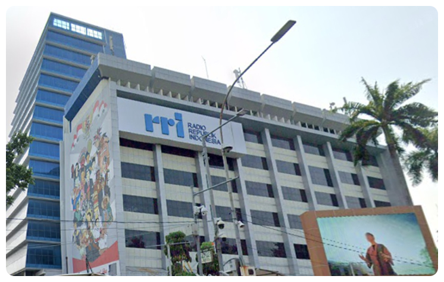
Jejaring komunitas muda CORE Indonesia
Bermuatan edukasi, rangkaian kegiatan Youth Economic Summit
melibatkan perguruan tinggi negeri maupun swasta dan sejumlah
komunitas yang relevan
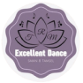
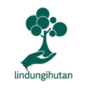
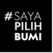
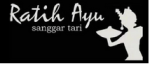
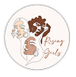
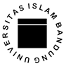
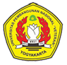
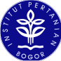
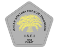
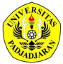
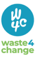
Community Partner
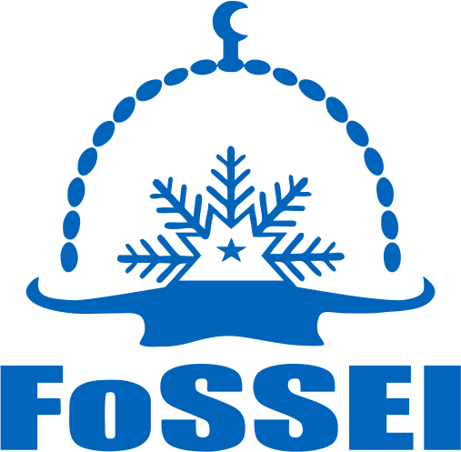
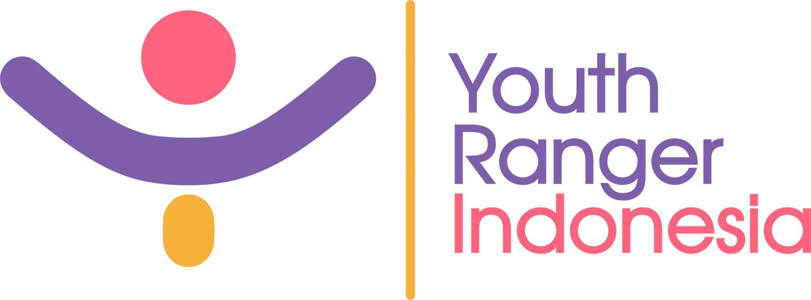
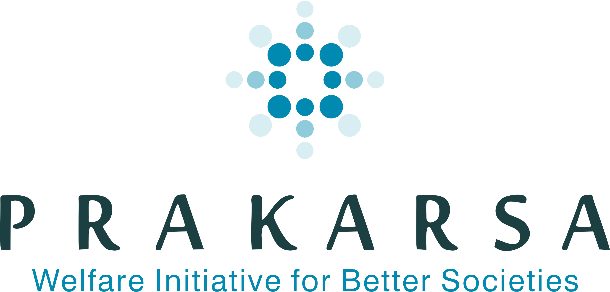
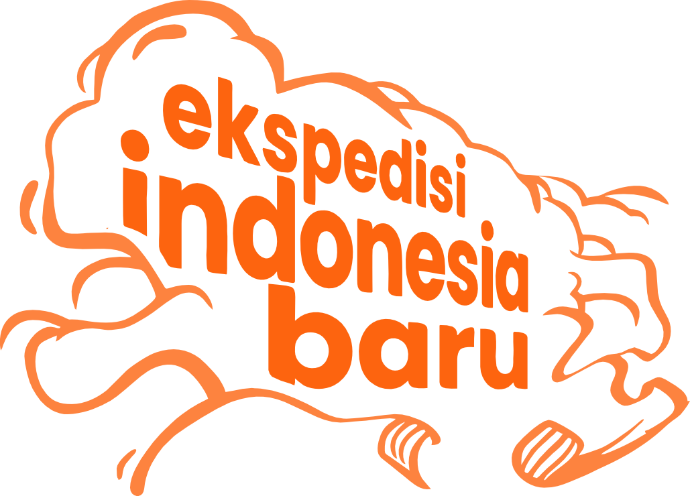
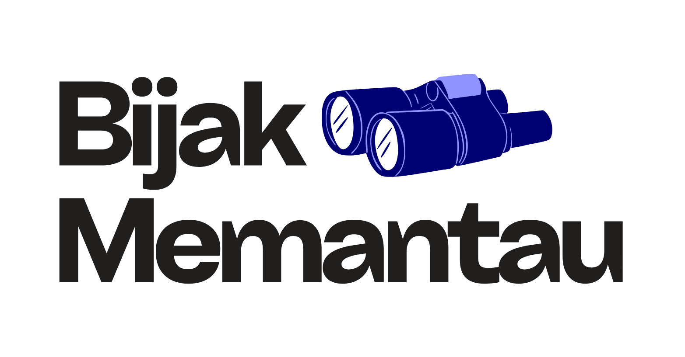
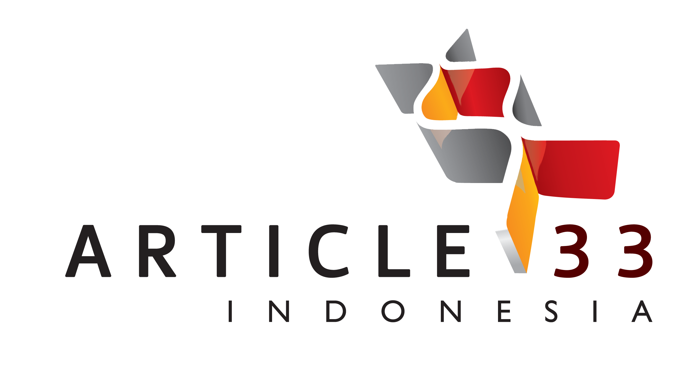
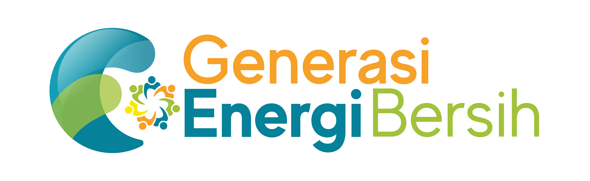
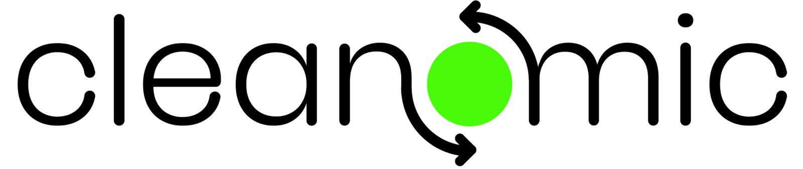
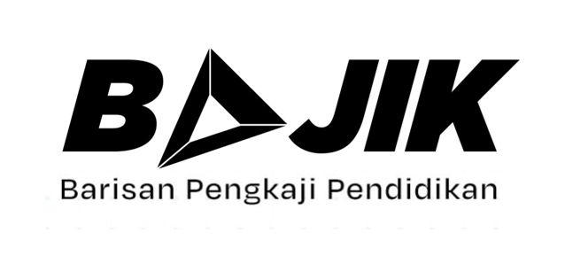
Supported Partner
An Event By
Collaborator
Gedung CORE Indonesia
Jl. Tebet Barat Dalam Raya
No. 76A, Jakarta Selatan, Indonesia 12810
info@coreindonesia.org
081314080397 (Emma)
Jl. Mega Kuningan Timur
Blok C6 Kav.9 Mega Kuningan Jakarta 12950
sisfira@arkadiacorp.com
087884128120 (Sisfira Rin)
Youth Economic Summit atau disingkat YES merupakan program
pelibatan kaum muda untuk mendukung kemajuan Indonesia melalui
pengembangan ekonomi digital yang inklusif dan ekonomi hijau
yang berkelanjutan.